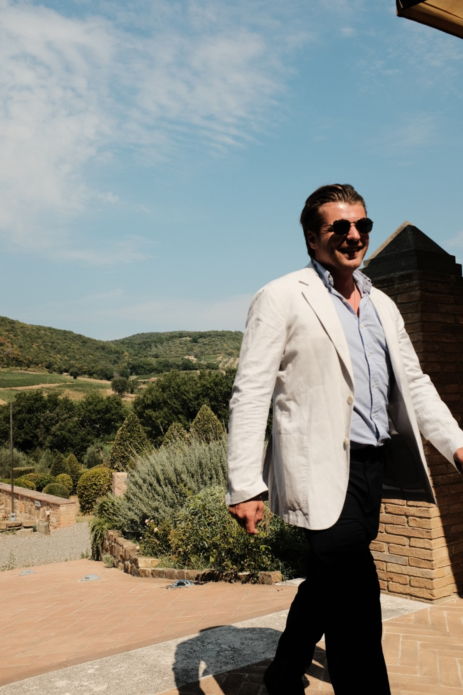

{{ heroSub }}

{{ profilLead }}
{{ profilBody }}
{{ profilPrinciple }}
{{ s1d }}
{{ s2d }}
{{ s3d }}
{{ s4d }}
{{ cAd }}
{{ cBd }}
{{ cCd }}
{{ cGd }}
{{ cDd }}
{{ cEd }}
{{ cFd }}
{{ langsFull }}
{{ certValue }}